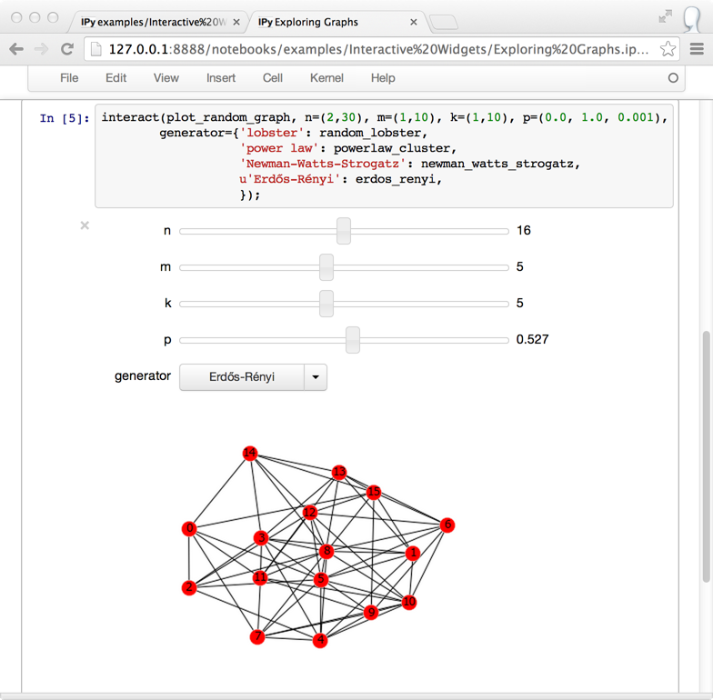
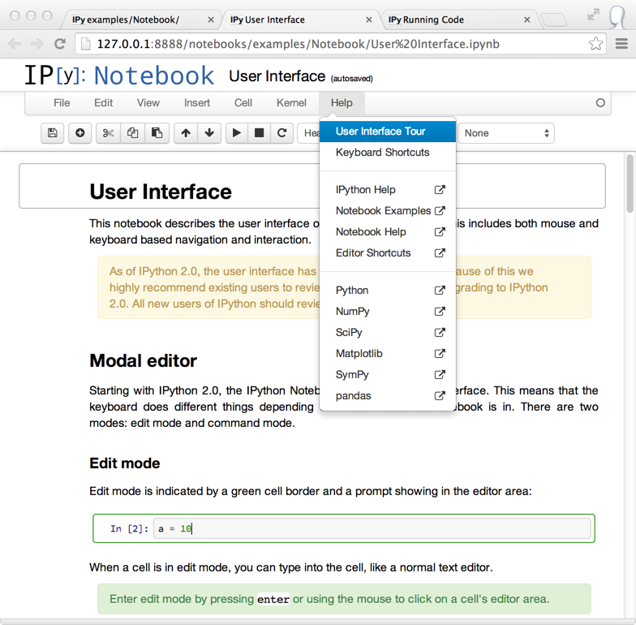

Warning
This documentation covers a development version of IPython. The development version may differ significantly from the latest stable release.
Important
This documentation covers IPython versions 6.0 and higher. Beginning with version 6.0, IPython stopped supporting compatibility with Python versions lower than 3.3 including all versions of Python 2.7.
If you are looking for an IPython version compatible with Python 2.7, please use the IPython 5.x LTS release and refer to its documentation (LTS is the long term support release).
2.x Series¶
Release 2.4¶
January, 2014
Note
Some of the patches marked for 2.4 were left out of 2.4.0. Please use 2.4.1.
backport read support for nbformat v4 from IPython 3
support for PyQt5 in the kernel (not QtConsole)
support for Pygments 2.0
For more information on what fixes have been backported to 2.4, see our detailed release info.
Release 2.3.1¶
November, 2014
Fix CRCRLF line-ending bug in notebooks on Windows
For more information on what fixes have been backported to 2.3.1, see our detailed release info.
Release 2.3.0¶
October, 2014
improve qt5 support
prevent notebook data loss with atomic writes
For more information on what fixes have been backported to 2.3, see our detailed release info.
Release 2.2.0¶
August, 2014
Add CORS configuration
For more information on what fixes have been backported to 2.2, see our detailed release info.
Release 2.1.0¶
May, 2014
IPython 2.1 is the first bugfix release for 2.0. For more information on what fixes have been backported to 2.1, see our detailed release info.
Release 2.0.0¶
April, 2014
IPython 2.0 requires Python ≥ 2.7.2 or ≥ 3.3.0. It does not support Python 3.0, 3.1, 3.2, 2.5, or 2.6.
The principal milestones of 2.0 are:
interactive widgets for the notebook
directory navigation in the notebook dashboard
persistent URLs for notebooks
a new modal user interface in the notebook
a security model for notebooks
Contribution summary since IPython 1.0 in August, 2013:
~8 months of work
~650 pull requests merged
~400 issues closed (non-pull requests)
contributions from ~100 authors
~4000 commits
The amount of work included in this release is so large that we can only cover here the main highlights; please see our detailed release statistics for links to every issue and pull request closed on GitHub as well as a full list of individual contributors.
New stuff in the IPython notebook¶
Directory navigation¶

The IPython notebook dashboard allows navigation into subdirectories. URLs are persistent based on the notebook’s path and name, so no more random UUID URLs.
Serving local files no longer needs the files/ prefix.
Relative links across notebooks and other files should work just as if notebooks were regular HTML files.
Interactive widgets¶
{kind=link}
IPython 2.0 adds IPython.html.widgets, for manipulating
Python objects in the kernel with GUI controls in the notebook.
IPython comes with a few built-in widgets for simple data types,
and an API designed for developers to build more complex widgets.
See the widget docs for more information.
Modal user interface¶
The notebook has added separate Edit and Command modes, allowing easier keyboard commands and making keyboard shortcut customization possible. See the new User Interface notebook for more information.
You can familiarize yourself with the updated notebook user interface, including an explanation of Edit and Command modes, by going through the short guided tour which can be started from the Help menu.
{kind=link}
Security¶
2.0 introduces a security model for notebooks, to prevent untrusted code from executing on users’ behalf when notebooks open. A quick summary of the model:
Trust is determined by signing notebooks.
Untrusted HTML output is sanitized.
Untrusted Javascript is never executed.
HTML and Javascript in Markdown are never trusted.
Dashboard “Running” tab¶

The dashboard now has a “Running” tab which shows all of the running notebooks.
Single codebase Python 3 support¶
IPython previously supported Python 3 by running 2to3 during setup. We have now switched to a single codebase which runs natively on Python 2.7 and 3.3.
For notes on how to maintain this, see Writing code for Python 2 and 3.
Selecting matplotlib figure formats¶
Deprecate single-format InlineBackend.figure_format
configurable in favor of InlineBackend.figure_formats,
which is a set, supporting multiple simultaneous figure formats (e.g. png, pdf).
This is available at runtime with the new API function IPython.display.set_matplotlib_formats().
clear_output changes¶
There is no longer a 500ms delay when calling
clear_output.The ability to clear stderr and stdout individually was removed.
A new
waitflag that preventsclear_outputfrom being executed until new output is available. This eliminates animation flickering by allowing the user to double buffer the output.The output div height is remembered when the
wait=Trueflag is used.
Extending configurable containers¶
Some configurable traits are containers (list, dict, set)
Config objects now support calling extend, update, insert, etc.
on traits in config files, which will ultimately result in calling
those methods on the original object.
The effect being that you can now add to containers without having to copy/paste the initial value:
c = get_config()
c.InlineBackend.rc.update({ 'figure.figsize' : (6, 4) })
Using dill to expand serialization support¶
The new function use_dill() allows
dill to extend serialization support in IPython.parallel (closures, etc.).
A DirectView.use_dill() convenience method was also added, to enable dill
locally and on all engines with one call.
New IPython console lexer¶
The IPython console lexer has been rewritten and now supports tracebacks and customized input/output prompts. See the new lexer docs for details.
DisplayFormatter changes¶
There was no official way to query or remove callbacks in the Formatter API.
To remedy this, the following methods are added to BaseFormatter:
lookup(instance)- return appropriate callback or a given objectlookup_by_type(type_or_str)- return appropriate callback for a given type or'mod.name'type stringpop(type_or_str)- remove a type (by type or string). Pass a second argument to avoid KeyError (like dict).
All of the above methods raise a KeyError if no match is found.
And the following methods are changed:
for_type(type_or_str)- behaves the same as before, only adding support for'mod.name'type strings in addition to plain types. This removes the need forfor_type_by_name(), but it remains for backward compatibility.
Formatters can now raise NotImplementedError in addition to returning None to indicate that they cannot format a given object.
Exceptions and Warnings¶
Exceptions are no longer silenced when formatters fail.
Instead, these are turned into a FormatterWarning.
A FormatterWarning will also be issued if a formatter returns data of an invalid type
(e.g. an integer for ‘image/png’).
Other changes¶
%%capturecell magic now captures the rich display output, not just stdout/stderrIn notebook, Showing tooltip on tab has been disables to avoid conflict with completion, Shift-Tab could still be used to invoke tooltip when inside function signature and/or on selection.
object_info_requesthas been replaced byobject_infofor consistency in the javascript API.object_infois a simpler interface to register callback that is incompatible withobject_info_request.Previous versions of IPython on Linux would use the XDG config directory, creating
~/.config/ipythonby default. We have decided to go back to~/.ipythonfor consistency among systems. IPython will issue a warning if it finds the XDG location, and will move it to the new location if there isn’t already a directory there.Equations, images and tables are now centered in Markdown cells.
Multiline equations are now centered in output areas; single line equations remain left justified.
IPython config objects can be loaded from and serialized to JSON. JSON config file have the same base name as their
.pycounterpart, and will be loaded with higher priority if found.bash completion updated with support for all ipython subcommands and flags, including nbconvert
ipython history trim: added--keep=<N>as an alias for the more verbose--HistoryTrim.keep=<N>New
ipython history clearsubcommand, which is the same as the newly supportedipython history trim --keep=0You can now run notebooks in an interactive session via
%run notebook.ipynb.Print preview is back in the notebook menus, along with options to download the open notebook in various formats. This is powered by nbconvert.
PandocMissingexceptions will be raised if Pandoc is unavailable, and warnings will be printed if the version found is too old. The recommended Pandoc version for use with nbconvert is 1.12.1.The InlineBackend.figure_format now supports JPEG output if PIL/Pillow is available.
Input transformers (see Custom input transformation) may now raise
SyntaxErrorif they determine that input is invalid. The input transformation machinery in IPython will handle displaying the exception to the user and resetting state.Calling
container.show()on javascript display is deprecated and will trigger errors on future IPython notebook versions.containernow show itself as soon as non-emptyAdded
InlineBackend.print_figure_kwargsto allow passing keyword arguments to matplotlib’sCanvas.print_figure. This can be used to change the value ofbbox_inches, which is ‘tight’ by default, or set the quality of JPEG figures.A new callback system has been introduced. For details, see IPython Events.
jQuery and require.js are loaded from CDNs in the default HTML template, so javascript is available in static HTML export (e.g. nbviewer).
Backwards incompatible changes¶
Python 2.6 and 3.2 are no longer supported: the minimum required Python versions are now 2.7 and 3.3.
The Transformer classes have been renamed to Preprocessor in nbconvert and their
callmethods have been renamed topreprocess.The
callmethods of nbconvert post-processors have been renamed topostprocess.The module
IPython.core.fakemodulehas been removed.The alias system has been reimplemented to use magic functions. There should be little visible difference while automagics are enabled, as they are by default, but parts of the
AliasManagerAPI have been removed.We fixed an issue with switching between matplotlib inline and GUI backends, but the fix requires matplotlib 1.1 or newer. So from now on, we consider matplotlib 1.1 to be the minimally supported version for IPython. Older versions for the most part will work, but we make no guarantees about it.
The pycolor command has been removed. We recommend the much more capable pygmentize command from the Pygments project. If you need to keep the exact output of pycolor, you can still use
python -m IPython.utils.PyColorize foo.py.IPython.lib.irunnerand its command-line entry point have been removed. It had fallen out of use long ago.The
input_prefilterhook has been removed, as it was never actually used by the code. The input transformer system offers much more powerful APIs to work with input code. See Custom input transformation for details.IPython.core.inputsplitter.IPythonInputSplitterno longer has a methodsource_raw_reset(), but gainsraw_reset()instead. Use ofsource_raw_resetcan be replaced with:raw = isp.source_raw transformed = isp.source_reset()
The Azure notebook manager was removed as it was no longer compatible with the notebook storage scheme.
Simplifying configurable URLs
base_project_url is renamed to base_url (base_project_url is kept as a deprecated alias, for now)
base_kernel_url configurable is removed (use base_url)
websocket_url configurable is removed (use base_url)